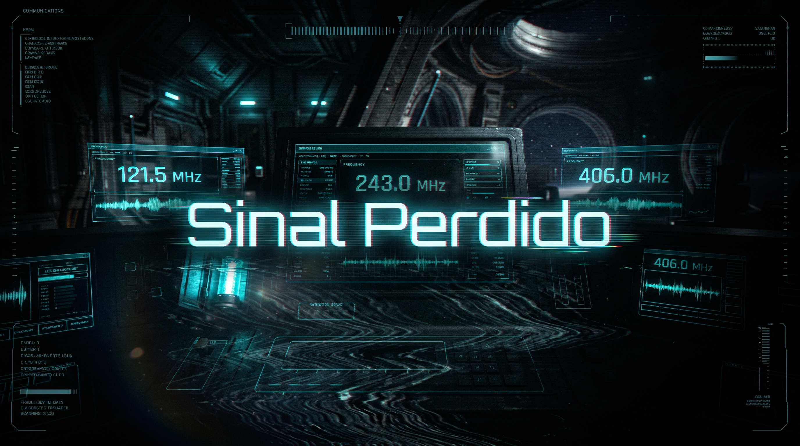

Transmissão Sem Resposta

A mensagem ecoa numa faixa desativada sem que nenhuma estação ou satélite a receba. A carga da Célula de Energia se esgota por completo no disparo e os painéis da Kepler-7 apagam definitivamente enquanto o oxigênio chega ao fim.